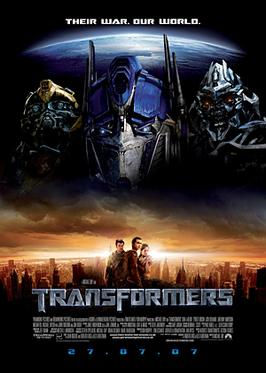

|  |
La saga Transformers fue creada hace mucho tiempo atrás, pero donde comenzó mi historia
de esta saga es cuando sacan las películas de Transformers en un formato realista.
Transformers 2007, primera cinta. Es el principio de los Transformers, en donde los introducen. Iniciando con la hostilidad
que poseen esos robots del espacio y enfocados desde el protagonista
Sam Witwicky debido a que posee la informacion de la ubicacion de un cubo proveninte de su planeta pero perdido en el planeta Tierra
capaz de dar vida a los Transformers. Basicamente tratan de recuperar el cubo pero existen bandos entre los transformers y se arman peleas
para ver quien lo consigue y tiene el poder.
|
|